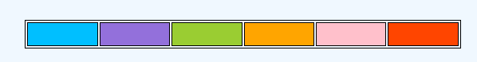
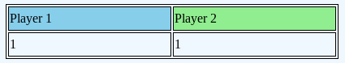
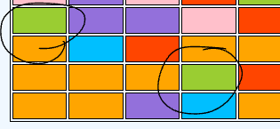
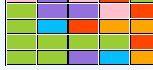
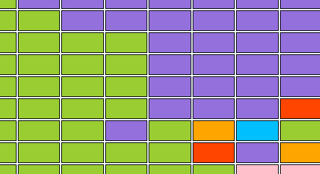
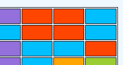

Color fill is a game in which you must fill as much of the grid with your territory as possible.
1. You are given a selection of 6 colors above the board, the colors correspond to the colors on the board.
2. You are not given the ability to choose the same color as your opponent currently has so you normally only have a selection of 4 colors at a time as the buttons of the colors currently in use disappear.

3. Player one starts building their territory from the bottom left corner and player 2 starts building their territory from the top right corner.
4. Player one always starts first.
5.Both players start at a score of one because you start with your corner square. The players score is a reflection of how many squares are in their territory.

6.When the whole board is claimed, the player with the most amount of squares win (Unless tie)
7. Take note of the colored squares surrounding your current squares. Choose the color which is touching your territory the most. (Note: Not diagonally)
In the first picture the players current teritory of orange is touching 2 green tiles. The player then clicks the green button (At top) to switch their whole territory color to green collecting those green squares as part of their territory and adding it to their score.

-->

Picture: The lone purple square in the green territory does not belong to purple as it is diagonal (Does not belong to green either becuase it is not the same color as the rest of it's territory)

8. You don't only have to consume one square at a time per side. If there is a space of several squares in the same color you will add all the squares of the same color which are next to eachother to you territory. (Note: Not diagonally)
For example in this picture if you are in the corner you can choose red and collect all 4 of the red ones touching eachother. (Not the one diagonal though)

9. Once all the squares of the board are filled up with both players territory the screen cuts to who the winner is.